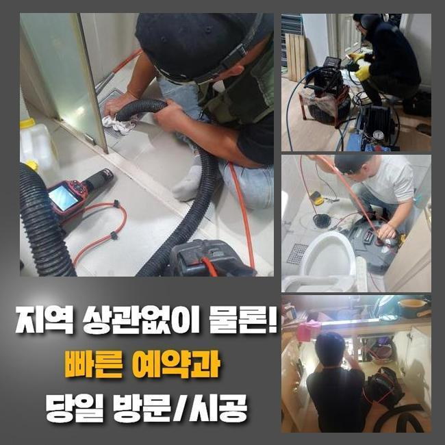
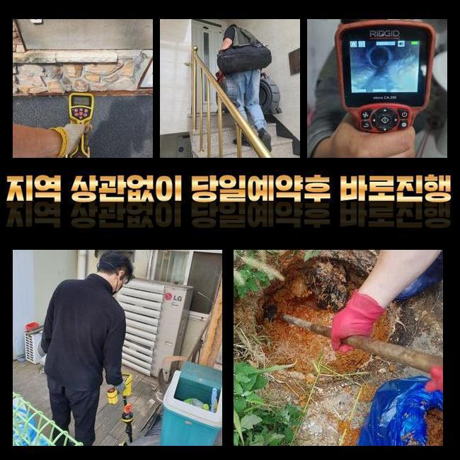
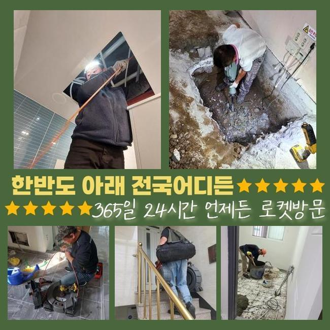
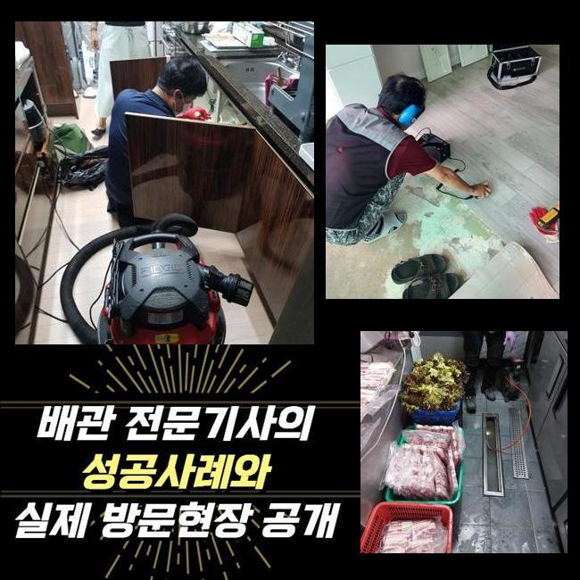
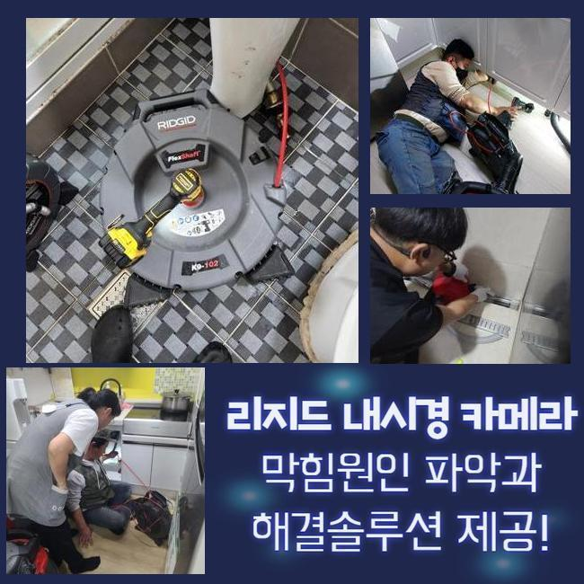
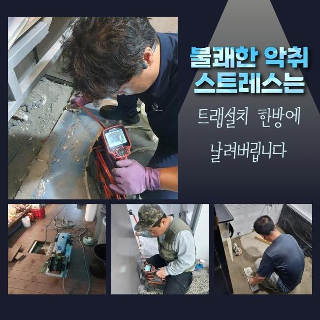

🏠 이천 진리동세탁실막힘 장호원읍 배관내시경카메라 배관뚫는업체
용인 배관막힘 전문 시공 후기

📋 작업 개요
- 위치: 용인
- 서비스 유형: 배관막힘, 뚫는업체, 배관청소, 고압세척
- 작업 일시: 2025. 1. 5. 16:21
- 업체명: 하수구수사대 (010-5615-2118)
🔍 문제 상황
이천 진리동세탁실막힘 장호원읍 배관내시경카메라 배관뚫는업체
며칠전 고객분의 집으로 내방드려 외부에 존재하는 하수라인을 뚫었는데요
전문성이 두드러지는 장치들을 이용하여 뒤탈없이 처리했습니다
물들이 안내려가는 문제들이 발생된 건 약 1주일 정도 되었다고 합니다
관로들은 물들이 흘러가며 자연스레 이물들이 배출되는데 내측을 시작으로 해 점진적으로 축적되다가 통로들이 막혀요
잔해들의 축적량과 고착화가 이뤄진다면 심화됩니다
이물질마다 전부 배출되는데에는 제약이 있어서입니다
이렇게 배수불가의 문제들이 발생되면 보통의 방식으로 개선이 불가한 경우들이 자주 있어요
고객님들이 스스로 평상시에 이용해보는 방법은 클리너제품이나 과탄산소다를 부어보는 건데요
증세가 발현되고 시간들이 얼마 안되었을때 시도할 수 있는 조치겠지만 바깥이라면 개선에 닿기가 힘들죠
바깥에서 결함들이 드러날 때엔 직관적으로 시정해보는것이 힘들어 전문인력의 솔루션을 고려하시는게 가장 효과가 좋아요

🔎 원인 분석
💡 전문가 진단: 정밀 진단 장비를 사용하여 슬러지의 고착 여부를 판명하고 타격/세척 작업을 실시했습니다.
전문가들의 해결과정으로서 해당 장소에서 어떠한 영향으로 막히게되었는지 오차없는 까닭을 특정하는건 기본이고 고객님차원에서의 방법관 다르게 빈틈없이 이물들을 제거하여 오랫동안 하수관을 깨끗히 유지하게됩니다
이번 통수오류의 또한 저희전문가들은 적합한 기계들을 활용하여 안정적으로 찌꺼기또한 제거한 후 깊숙한 지점까지 통수시켜주었어요
살펴보니 바깥부분에 자리하고 있는 지점에서 증상이 생긴것이였고 시정해보는것이 불가능해 내방을 원하셨습니다
저희업체는 의뢰자분의 일정들이 괜찮다면 바로 내방드려 해당 장소에서 작업들을 착수하죠
문의들을 받아보았을 땐 문제위치는 마당부분이였어요
단독주택 바깥에 위치한 배수구가 막힌 탓에 우천상황에서는 솟구치는 형상이였습니다
특히 비들이 내릴때 쓰레기들이나 꽁초처럼 여러가지의 오염물들이 빠지게됩니다
수도를 이용하면 갑작스레 배수구로 천천히 빠지는 현상들이 빈번하다고 말씀하셨어요
처음엔 의뢰인은 기간이 지나게되면 잘 내려가겠지 생각하시곤 해결을 미룬 상태라고 하셨어요
어느 순간 미루게되어서 그런가 연거푸 수도들이 전혀 빠지지 않았대요
발등에 불이 떨어져 오래도록 기간이 흐른 후 배수되는걸 인지하고서 미뤄선 안되겠다 생각하시어 문의를 주신것이였죠

🔧 작업 과정
가옥 특성 상 타 세대에게 피해들을 끼치진 않았지만 평상 시에 관리책 실시가 요구되는 지점입니다
그 즉시 방문이 가능한 데가 적어서 걱정이 앞섰는데 저희들은 바로 가능하여 곧장 호출을 하신것이였죠
저희들은 평일말고도 주말까지 찾아가며 연중무휴를 기준으로 청소해드리고 있기에 즉시 방문드려 청소에 몰두했어요
하수관은 협소하기에 육안으로 들여다보는것에는 제한이 있습니다
문제의 배관에 내시경기기를 삽입해 심층부 부근 위치에 이물들이 어떠한 모습으로 자리했는지 체크하죠
내시경장비로 침전된 잔해물질들을 어디서부터 긁어내야되는지 판단되면 실용적인 방식들을 선정합니다
1차적으로 샤프트기기를 써보고 사이즈가 커지는 부분은 고압수청소를 이용해주기로 결론 지었어요
샤프트기기는 몸체부분과 연결되어있는 라인에 단단한 노커부속이 달린 모습인데 이 노커부속이 벽쪽에 고착된 이물뭉치들을 분쇄시키는 전문기기입니다
전문성이 두드러지는 기기를 통해서 빈틈없이 증상회복을 이뤄냈어요
작업을 할 때에 혹여 뚫어내지못하면 비용청구는 없다고 말씀드려요
저희업체는 애초에 해당 장소에 찾아뵐 때 출장금액들을 별도로 청구하지 않은채로 내방하므로 금액적인 과중이 덜하게되고 뚫지못한다면 비용청구도 없으니 주저없이 상담해보시기 바랍니다
작업 과정 중에 개선이 안된 상태로 돌아가면서 출장관련 금액을 받는 절차는 단 한건도 없다고 약속합니다
방문드린 곳은 바깥쪽에 있던 스팟으로 자갈 등도 빠진 상태였고 침전된 기름들과 뒤섞이며 점성이 짙고 돌과 같이 굳어버렸죠
각 이물들끼리 뭉치게되어 중심구간에서부터 구멍을 뚫어주었는데요
흡착이 많이 진행된 터라 간소하게 해결되는것은 아니고 심층부까지 제거하려면 집수시설부터 고압노즐 장치를 이용해야되는 상황들이었습니다
고압노즐을 통해서 안정적으로 세척이 요구되었던 상태가었습니다
내시경을 중간중간 이용하며 지속적으로 작업을 이어갔지만 하수가 원활히 빠지는 현상이 아니었습니다
그 이유는 외부유입물과 함께 슬러지들이 구간별로 넓은 범위에 쌓이게되며 고착된 상태여서죠


✅ 작업 완료
샤프트기기가 이용되지 못하는 지점으로서 고수압방식이 요구되었어요
이후에 고압수청소로 기름을 제거시키며 엘보부분에까지 박힌 이물들을 떨군 후 청소해주었습니다
확실히 청소해주니 점차 협소했던 배관으로 배수과정이 진행되었고 안쪽과 이어진 지점들도 배출들이 진행되었어요
위같은 진행상황을 고객분에게 설명드리고 모든 작업은 마무리됐습니다
재발될 수 없게 사용하실 때 지속적으로 관리들을 신경써주시고 만에하나 일년동안에 또 생겨나면 저희전문진이 사후관리를 이행하니 걱정할 일 없으십니다!



⚠️ 하수구 배관 막힘 예방 및 관리 가이드
- ✅ 머리카락, 비닐, 물티슈 등 물에 분해되지 않는 이물질은 하수구 유입을 절대 금지해 주세요.
- ✅ 하수구 거름망을 씌우고 모여진 이물질은 주기적으로 쓰레기통에 바로 비워주셔야 합니다.
- ✅ 배관 노후가 심할 경우 이물질이 더 쉽게 걸리므로 주기적인 배관 세척(고압세척 등)을 권장합니다.
- ✅ 작업 후 1년 이내 재발 시 하수구수사대에서 무상 A/S 보증 서비스를 제공합니다.
💡 핵심 정리
- 확실한 장비 작업(내시경 점검 및 샤프트 스케일링)으로 원인을 뿌리 뽑습니다.
- 작업 후 1년 이내에 동일한 부위 재발 시 100% 무상 A/S 서비스를 보장합니다.
- 서울 · 경기 · 인천 전 지역에 24시간 언제든 긴급 출동할 수 있도록 항시 대기 중입니다.
❓ 자주 묻는 질문 (FAQ)
🚨 용인 배관막힘 문제로 고민이신가요?
정확한 원인 진단과 확실한 시공으로 재발 없는 해결을 약속드립니다.
24시간 긴급 출동 | 서울 · 경기 · 인천 전지역 | 1년 내 재발 시 무상 A/S